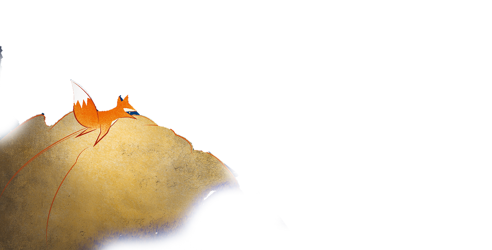
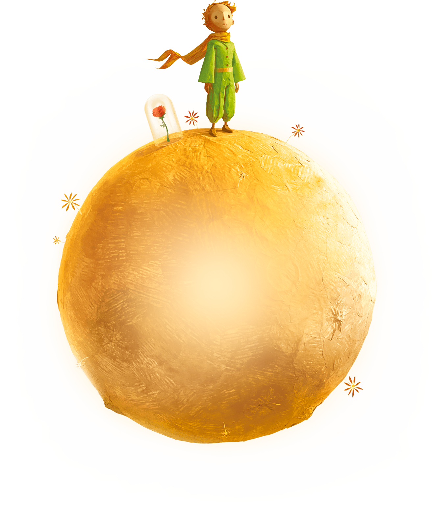

Меня зовут Киселева Софья Александровна.
Умею выполнять несколько задач одновременно , налаживать коммуникацию с людьми, а так же выполнять монотонную работу . Увлекаюсь волейболом , так же много времени уделяю на саморазвитию.
С детства любила рисовать .
Принцу нужен лис!

